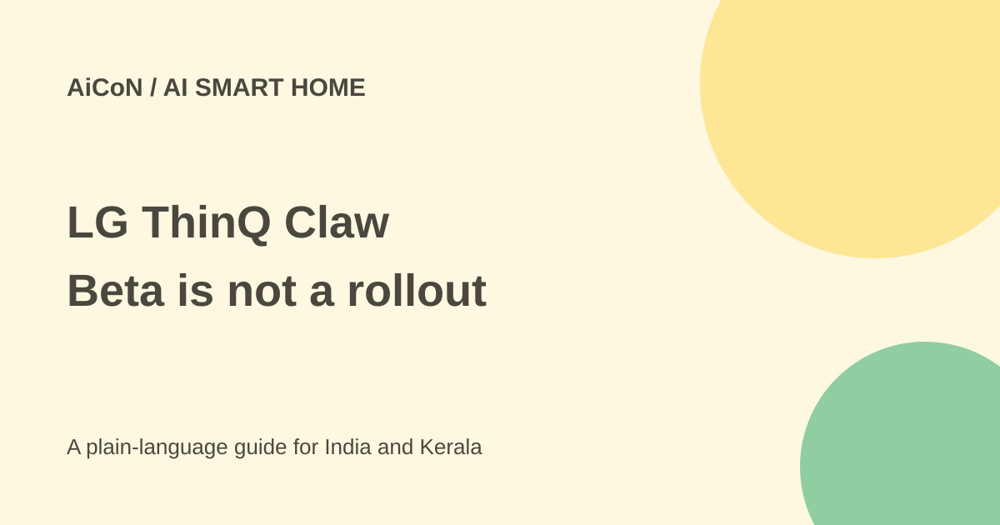

LG ThinQ Claw: smart-home beta and India availability
LG ThinQ Claw is a chat-based smart-home AI concept. A demonstration and limited beta do not make it available to every LG customer.

What is ThinQ Claw?
LG's IFA 2026 announcement presents a home AI that understands context rather than just fixed commands. ThinQ Claw is part of that direction: a conversational agent coordinating appliances, routines and connected information. Preparing for guests could involve more than switching one device on.
It depends on supported hubs, appliances, accounts and services. A demonstration is not a compatibility list for every model, an update for all existing devices or an India launch.
What is official, and what is reported?
LG's 31 August release describes its IFA demonstration. A separate 28 September Herald report says a closed beta began on 14 September with 50 customers and 30 employees using ThinQ On, for roughly three months.
Herald describes KakaoTalk or Telegram chat and Google Calendar links, with a year-end domestic launch target followed by selected US and European markets. These are attributed beta details and targets, not promised release dates. Neither checked source establishes an India date or retail price.
Can people in Kerala use it now?
No open India access was verified. The reported beta is closed and Korea-first. Owning LG appliances or using the ThinQ app does not establish eligibility. Do not buy a hub or appliance solely for this agent without confirmation of your exact country, account and model.
Watch official product and India support channels, rather than unofficial beta invitations. Existing appliances may offer ordinary ThinQ features, but those are separate from this agent.
What to check before future setup
- Confirm official access for your country and account.
- Check exact hub and appliance models, firmware and network requirements.
- Check available messaging and calendar services for that rollout.
- Review permissions before linking household accounts.
- Start with a low-risk routine and inspect the result on the appliance.
- Keep manual controls available and agree who in the household may change routines.
Memory and physical safety
An assistant remembering preferences may make routines easier. It can also learn when people are away and receive meeting or visitor details. Ask where data is stored, who can see it, how long it stays and how each household member can stop sharing or delete it.
Conversational automation is not a substitute for appliance safety instructions. Cooking, heating and other physical actions need limits and checks. A plausible chat response does not prove the device changed state or that a routine is safe in an empty home.
Is it free?
No public India subscription price or free consumer tier was verified. Hub and appliance costs, connected-service fees and any future agent charge are separate. A beta does not settle the final commercial package.
What changed since the original AiCoN post?
The original described a Korea-first beta and year-end target. This guide preserves them as reported details, uses LG's official release for the broader concept and avoids turning a target into a promise. No India date was established.
Frequently asked questions
Does every LG appliance work?
Universal support was not established. Check the list for your market.
Can I join through Telegram?
A reported channel is not an open signup route. Use official eligible-account access.
Should I buy ThinQ On now?
Not solely on this beta report. Confirm access and hardware first.
Is year-end an India launch?
No. The report describes a domestic target, not an India commitment.
Sources: LG IFA announcement · Herald beta report. Checked 7 October 2026.